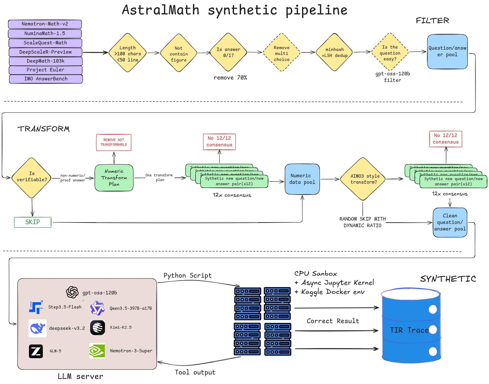
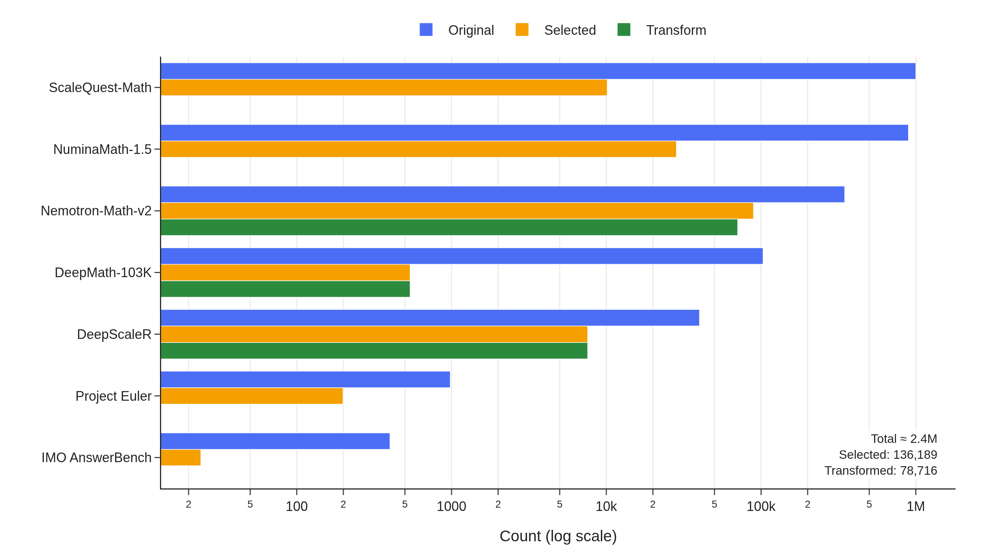
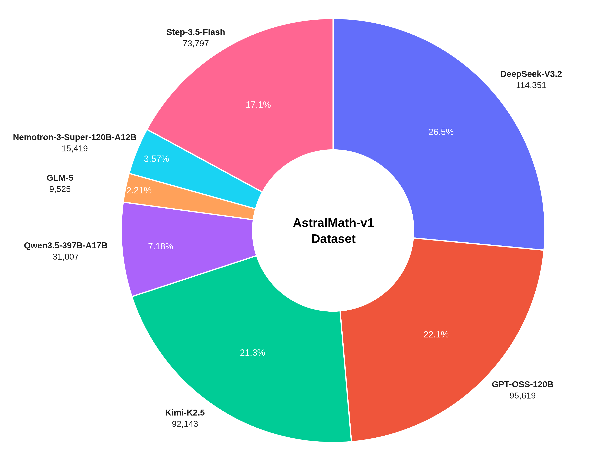
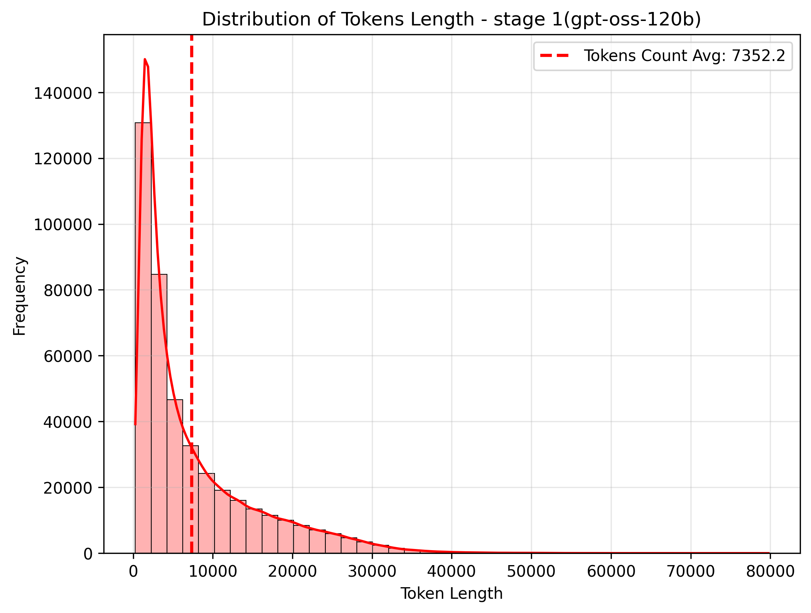
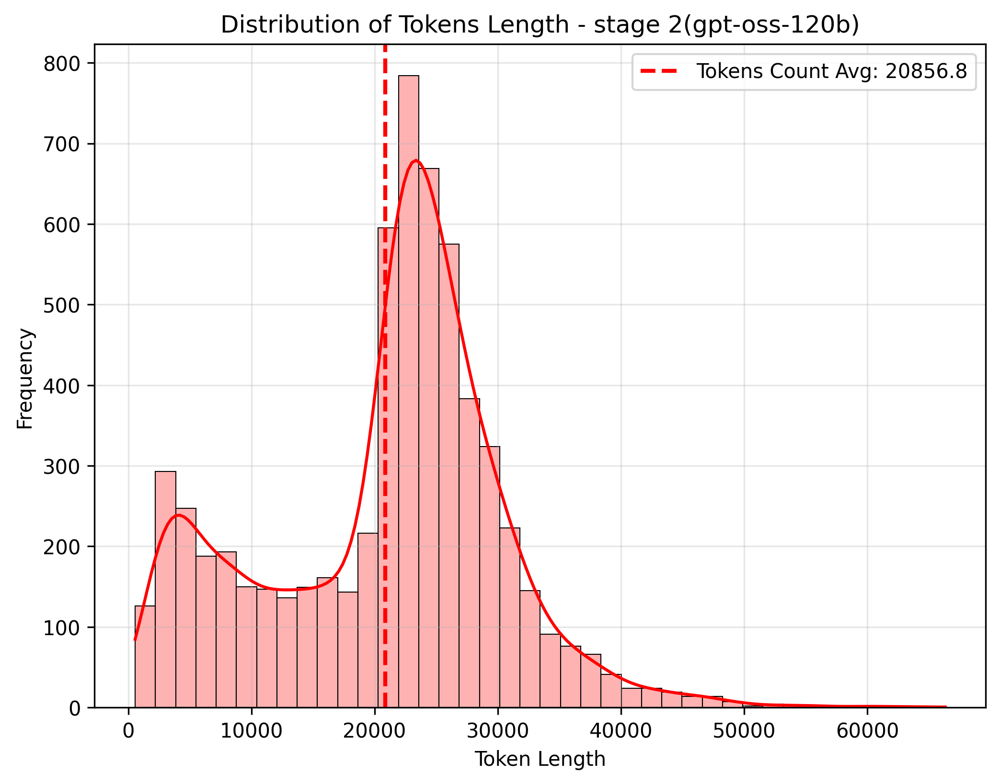
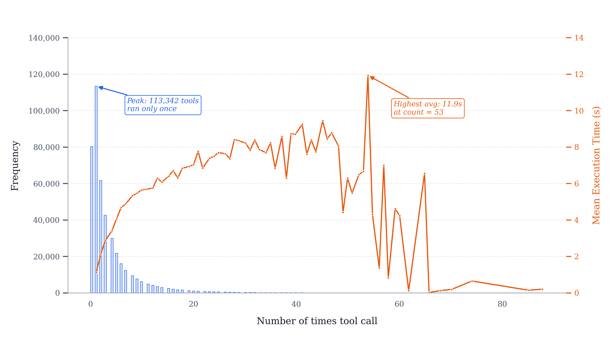
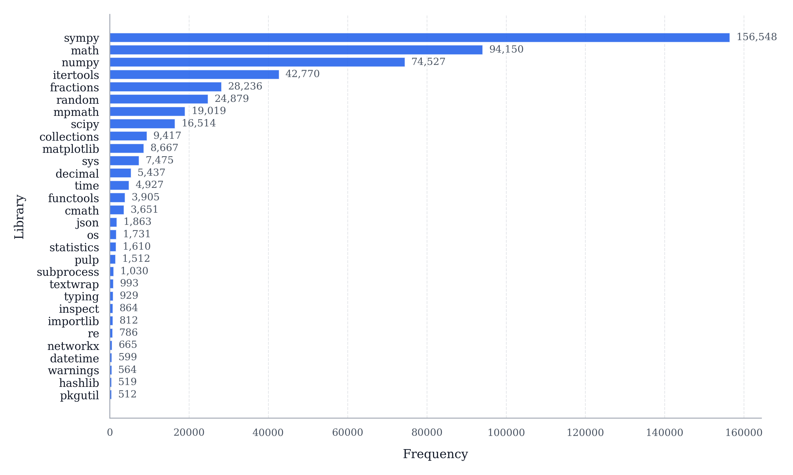
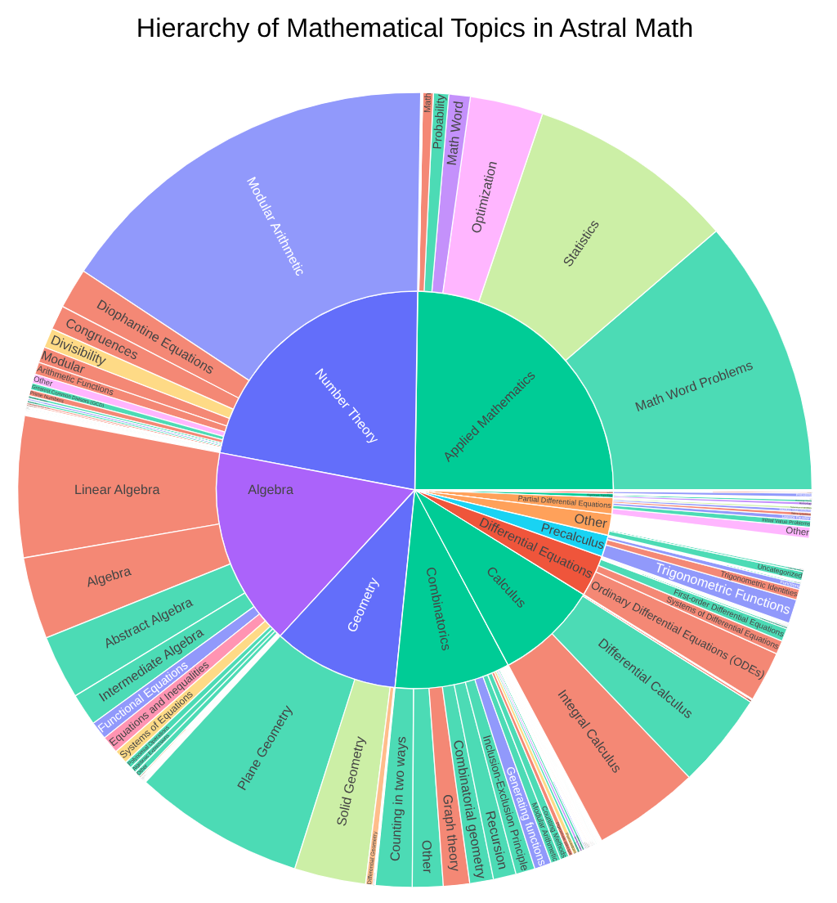
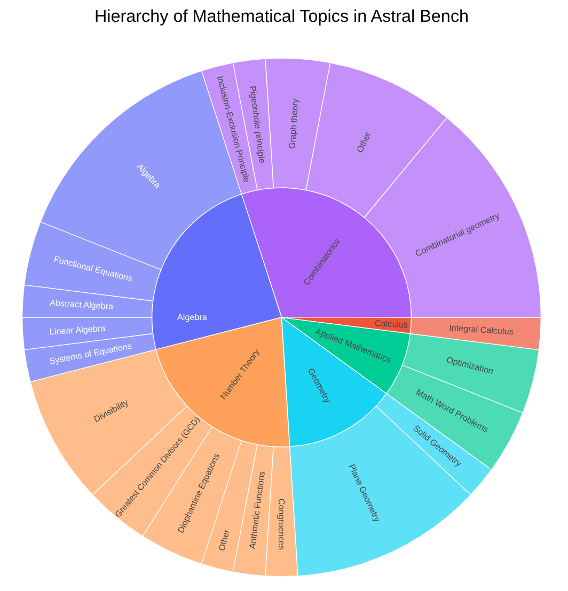

A large-scale Tool-Integrated Reasoning (TIR) dataset for mathematical problem solving, designed for SFT and RL training targeting competitive mathematics.
| Models | DeepSeek-V3.2, GPT-OSS-120B, Step-3.5-Flash, GLM-5, Kimi-K2.5, Qwen3.5-397B-A17B, Nemotron-3-Super-120B-A12B |
| Answer Format | Cleaned verifiable numeric answers |
| File Format | JSONL (training) / CSV (benchmark) |
| Stage 1 | 425,620 TIR traces — SFT training or RL warmup |
| Stage 2 | 6,241 TIR traces from 3,304 hardest questions — RL finetuning |
Each unique question is solved independently by multiple frontier models, producing diverse solution trajectories for the same problem.

End-to-end pipeline: multi-source filtering, consensus-verified AIMO3 transforms, and multi-model TIR trace generation in a Kaggle-identical sandbox environment.
AstralMath-v1 is built from curated questions across multiple high-quality mathematical datasets, deduplicated to remove overlapping problems. A significant portion is synthetically transformed into AIMO3-competition-style questions.

Problem sources and selection counts — "Transform" indicates the number of questions paired with a consensus-verified integer-answer transformation. Total: 136,151 selected from ~2.3M raw problems (6% retention), with 78,716 transformed variants.
We apply aggressive filtering to retain only challenging, well-formed problems:
A key differentiator: existing math problems are rewritten into AIMO3-competition-style questions with verifiable integer answers in [0, 99999]. Each strategy targets a different answer structure. Click any strategy to see a complete before/after example.
Find the maximum value of $D$ satisfying: there exists an infinite sequence $x_1, x_2, \ldots$ where each term belongs to $[0, 777]$ such that for all positive integers $m < n$, $$(m+n)|x_n^2 - x_m^2| \ge D.$$
There exists an infinite sequence $x_1, x_2, \ldots$ where each term belongs to $[0, 777]$ such that for all positive integers $m < n$, $$(m+n)|x_n^2 - x_m^2| \ge D.$$ Let $D$ denote the maximum value satisfying this condition. What is the remainder when $D$ is divided by 99991?
In an integer set $\{a, b, c, d\}$, exactly 3 integers are positive, at least 2 are divisible by 2, and exactly 2 are negative reciprocals of each other. If $a + b + c + d = p$, find the smallest possible value of $p^2$.
In an integer set $\{a, b, c, d\}$, exactly 3 integers are positive, at least 2 are divisible by 2, and exactly 2 are negative reciprocals of each other. If $a + b + c + d = p$, let $k$ denote the smallest possible value of $p^2$. What is the remainder when $k^6$ is divided by 99999?
Let $m$ be a positive integer. Consider a $4m \times 4m$ array of square unit cells. Two cells are related if they share a row or column (no cell related to itself). Some cells are colored blue so every cell is related to at least two blue cells. Determine the minimum number of blue cells.
Let $m$ be a positive integer. Consider a $4m \times 4m$ array of square unit cells. Two cells are related if they share a row or column (no cell related to itself). Some cells are colored blue so every cell is related to at least two blue cells. Let $k$ denote the minimum possible number of blue cells. What is the remainder when $4^k$ is divided by 77795?
Let $a_0, a_1, \ldots$ be a sequence of non-negative integers. Suppose for all non-negative integers $p$, $$a_{a_{a_p}} = a_{p+1} + 1.$$ Find all possible values of $a_{2025}$.
Let $a_0, a_1, \ldots$ be a sequence of non-negative integers. Suppose for all non-negative integers $p$, $$a_{a_{a_p}} = a_{p+1} + 1.$$ Find the sum of all possible values of $a_{2025}$.
A non-equilateral triangle $XYZ$ is inscribed in a circle $\Omega$ with centre $P$, radius $R$; incircle centre $Q$ touches $YZ, ZX, XY$ at $L, M, N$. A circle of centre $Q$, radius $\rho$ meets rays $[QL),[QM),[QN)$ at $X',Y',Z'$. Compute $\frac{QK}{QP}$ in terms of $\rho$ and $R$, where $K$ is the orthocentre of $X'Y'Z'$.
A non-equilateral triangle $XYZ$ is inscribed in a circle $\Omega$ with centre $P$, radius $R$; incircle centre $Q$ touches $YZ, ZX, XY$ at $L, M, N$. A circle of centre $Q$, radius $\rho$ meets rays $[QL),[QM),[QN)$ at $X',Y',Z'$. Given $\rho = 2$ and $R = 8$, compute $\frac{QP}{QK}$ where $K$ is the orthocentre of $X'Y'Z'$.
Positive reals $x, y, z$ satisfy $xyz = 3$, $(x-y)(y-z)(z-x) = 4$, $(x+y)(y+z)(z+x) = 40$. Compute the minimum possible value of $x$ as an exact expression using only integers, rational numbers, and radicals.
Positive reals $x, y, z$ satisfy $xyz = 3$, $(x-y)(y-z)(z-x) = 4$, $(x+y)(y+z)(z+x) = 40$. Let $k$ denote the minimum possible value of $x$, and define $n = \lfloor 37k \rfloor$. What is the remainder when $3^n$ is divided by 78787?
Each transformation is verified through 12-run consensus: the same prompt is sent to gpt-oss-120b 12 times and accepted only when all runs return the identical answer.
Solutions are generated using 7 frontier models in a Kaggle-identical Docker environment. After the first correct solution, improvement iterations produce shorter solutions with less total tool run time.

Distribution of Generated Traces by Model (Total N = 431,861) — DeepSeek-V3.2 is the largest contributor, followed by GPT-OSS-120B and Kimi-K2.5. Each model brings distinct solution styles, library preferences, and debugging patterns.
Token length distribution between Stage 1 and Stage 2 (estimated using gpt-oss-120b harmony encoding). Stage 2 contains the hardest questions, resulting in longer and more complex solution traces.

Stage 1 — Majority of traces are under 10k tokens, with a long tail of complex problems reaching 40k+. The distribution shows a healthy spread across difficulty levels.

Stage 2 — Shifted right compared to Stage 1, reflecting the higher difficulty. These are the hardest questions that require extended multi-step reasoning and multiple tool calls.
Tool-call behaviour across all AstralMath traces. The distribution is heavily right-skewed: 113,342 traces invoke the Python interpreter exactly once, and frequency drops sharply thereafter. Mean tool-execution time rises gradually from ~1 s for single-call traces to a peak of 11.9 s at count 53, reflecting longer-running numerical searches and iterative refinement loops in harder problems.

Tool call distribution — blue bars (left axis) show per-trace call counts; orange line (right axis) shows mean tool-execution time. Beyond count 60 both metrics become noisy due to small sample sizes.
The 30 most frequently imported Python libraries across all AstralMath traces. sympy is by far the most common (156,548 traces), reflecting the prevalence of symbolic algebra, equation solving, and number-theory operations in competition mathematics. math (94,150) and numpy (74,527) follow as the primary numerical workhorses, while itertools (42,770) and fractions (28,236) appear frequently in combinatorics and exact rational arithmetic problems. Specialised libraries such as mpmath (19,019) for arbitrary-precision arithmetic and pulp (1,512) for linear programming round out the long tail, confirming that the pre-installed sandbox covers a wide range of mathematical sub-disciplines.

Top 30 Python libraries imported across AstralMath traces — ranked by number of traces in which each library appears.
Topic distribution comparison between the full AstralMath-v1 dataset and the AstralBench benchmark subset.

AstralMath-v1 — Broad coverage across algebra, number theory, combinatorics, geometry, and analysis. The hierarchical topic classification supports fine-grained curriculum design.

AstralBench — 50 curated problems spanning the hardest topics. Selected from various benchmarks or math competitions with current model accuracy between 5-30%.
AstralBench is a 50-problem benchmark drawn from elite competition sources — IMOBench, Project Euler, HMMT, SMT, USA-TSTST, USEMO, EGMO, CMO, Pumac, Putnam, Open-RL, and MIT-Math — selected for difficulty and topic diversity. Problems with symbolic or non-integer answers are manually transformed via modular arithmetic and parameter changes while preserving the original mathematical difficulty. All answers are integers in [0, 99999], enabling fully automated grading.
| Source | Count | Transformed |
|---|---|---|
| IMOBench | 33 | 24 |
| Project Euler | 2 | 2 |
| Open rl | 3 | 2 |
| USA-TSTST | 2 | 0 |
| EGMO | 2 | 0 |
| Other | 8 | — |
| Total | 50 | 28 |
Model Performance on AstralBench:
| Model | AstralBench-v1 | AstralBench-v1.1 |
|---|---|---|
| GPT-OSS-120B (public notebook) | 9, 14, 13/50 | 12, 15/50 |
| GPT-OSS-120B (10h timeout) | 15/50 (30%) | 13/50 |
| Qwen3-4B-Thinking (5h timeout) | - | 3/50 |
| DASD-4B-Thinking (5h timeout) | - | 5/50 |
| Qwen3-4B-Astral-Finetune (5h timeout) | - | 9/50 |
All models run in a Kaggle-identical Docker environment with no time limit. Problems that originally had symbolic or fraction answers are transformed via modular arithmetic and parameter changes while preserving their original complexity.
We validated AstralMath-v1 by fine-tuning several models:
| Model | Original | Finetuned | Setting |
|---|---|---|---|
| Qwen/Qwen3-4B-Thinking-2507 | 5 | 22, 23 (~5h) | 1150 SFT steps, max length 40960, bs 8, ~11h on 1x H100 |
| Alibaba-Apsara/DASD-4B-Thinking | 10 | - | - |
| openai/gpt-oss-20b | 30 (~5h) | 34, 33, 34 (~5h) | 400 LoRA (rank 1, alpha 32) steps, max length 50176, bs 12, ~11.5h on 1x H100 |
| openai/gpt-oss-120b | 37–45 | 40 | 250 LoRA (rank 1, alpha 32) steps, max length 40960, bs 16 |
Each question is solved independently by multiple frontier models, capturing diverse reasoning strategies and code patterns. This is not a single-model distillation dataset.
AIMO3-style transformations are validated through 12-run consensus, ensuring all transformed answers are computationally correct — not just plausible.
Every solution carries detailed metadata: generation config, execution timing, quality metrics — enabling difficulty-aware curriculum learning.
Solutions generated and verified in a Kaggle-identical Docker environment, ensuring code execution compatibility at competition time.
425,620 TIR traces from 7 frontier models, target for SFT training or RL warmup
Or upload manually:
6,241 TIR traces from 3,304 hardest questions, target for RL finetuning
Or upload manually:
Subset of Stage 2 TIR traces with per-turn quality assessment from 4-judge deliberation
Or upload manually:
50 curated hard problems from elite competition sources for offline evaluation
| Model | AstralBench-v1 | AstralBench-v1.1 |
|---|---|---|
| GPT-OSS-120B (public notebook) | 9, 14, 13/50 | 12, 15/50 |
| GPT-OSS-120B (10h timeout) | 15/50 (30%) | 13/50 |
| Qwen3-4B-Thinking (5h timeout) | - | 3/50 |
| DASD-4B-Thinking (5h timeout) | - | 5/50 |
| Qwen3-4B-Thinking Astral Finetune (5h timeout) | - | 9/50 |
Or upload manually:
520,000+ error traces from multi-model reasoning attempts — failed solutions with extracted answers for error analysis and DPO/negative training
Or upload manually: